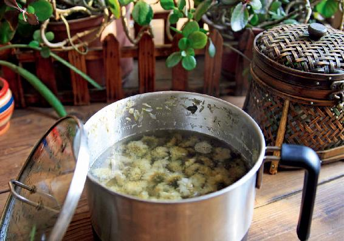

一年里，我们中国人有两个保健的节日：一个是五月初五的端午节；一个是九月初九的重阳节。
这两个节日都是非常有讲究的，两个“五”重叠在一起，叫作重五，是端午节的别名；而两个“九”重叠在一起，就叫作重九，也是重阳节的别名。
端午节，我把它称为“卫生节”，注重的是防五毒；而重阳节，我把它称为“长生节”，讲究的就是长寿养老，现在把它定为老年节，这与传统文化是一脉相承的。为什么重五、重九这样的日子中国人非常重视呢？因为它们都是阳数。
古人认为一、三、五、七、九这五个奇数是阳数，当两个相同的阳数重叠，必为节日。
正月初一：元旦节
三月初三：上巳节
五月初五：端午节
七月初七：七夕节
九月初九：重阳节
九是数字里面最大的，是至阳的数字。两个至阳的数字重叠，而且日、月都是九，这叫日月并应，当然更不一般，因此古人十分重视重阳节。
九月初九，九也代表“久”，古人说是“宜于长久”——长生久视，长寿养老。我们现在把它定为老年节，是很有道理的。
其实，古人过重阳节必备的茱萸与菊花，就是孝养老人的养生方。

重阳节，有三件事我们要做：
一、佩戴茱萸。
二、登高望远。
三、饮菊花。饮菊花，辅体延年。
重阳节，皇帝为什么送来一束菊花？
把九月初九称为“重阳”，这个名词历史很久远。但民间是从什么时候把它作为一个节日来庆祝呢？有一封历史上有名的书信，可能是现存的最早记载。
这封信是三国时魏文帝曹丕写给太傅钟繇（yáo）的。这两个人都是大名人。
曹丕是曹操的儿子，魏国的皇帝。他很有文才。他的弟弟曹植，做《洛神赋》《七步诗》，文采风流。曹丕的文才也不比曹植差，只不过做了皇帝，倒把他的才名掩盖了。
钟繇是魏国的四朝重臣，也是大书法家。我们现在使用的楷书就是钟繇定的，王羲之的书法也是向他学习的。
这两个人的关系好得不一般，曹丕在重阳日给钟繇送了一束菊花，还写了这么一封信：
岁往月来，忽复九月九日。九为阳数，而日月并应，俗嘉其名，以为宜于长久，故以享宴高会。
是月律中无射（yì），言群木庶草，无有射地而生。至于芳菊，纷然独荣。非夫含乾坤之纯和，体芬芳之淑气，孰能如此？
故屈平悲冉冉之将老，思飧（sūn，晚餐）秋菊之落英，辅体延年，莫斯之贵。谨奉一束，以助彭祖之术。
翻译成白话文就是：
时间过得真快，转眼又到了九月九日。九是阳数，日、月都是九，人们认为是好日子，象征长长久久，所以大家要欢聚宴饮。
这个月对应的音律是无射，意思是各种草木没有再生长的了。只有菊花开得繁茂芳香，如果不是它蕴含天地的纯和芬芳之气，怎能如此？
屈原有感于年华将老，想要服食秋菊的花朵。可见使人延年益寿的药，没有比菊花更珍贵的了。所以特意送上一束，帮助您实践彭祖的养生之术。
冉冉之将老，餐秋菊之落英
重阳节，曹丕派人送给钟繇一束菊花，有祈寿之意。因为它“含乾坤之纯和，体芬芳之淑气”，可以延年益寿。
在信里面讲的食菊花的典故，来自屈原的《离骚》：“老冉冉其将至兮，恐修名之不立。朝饮木兰之坠露兮，夕餐秋菊之落英。”
屈原感到老之将至，便吃菊花来保健身心。魏文帝于重阳日送菊花给太傅，以助养生。这不是皇帝和诗人的浪漫想法，而是古人实践得来的经验。古代有不少通过服食菊花来延年益寿的例子。
很多人以为菊花的作用只是清肝明目，其实它还有一个重要作用——通利血脉，对预防心血管疾病有好处，也能降压，因此它对老年人确实有保健作用。
古人重阳时一定会赏菊花，因为这个时候正是菊花开得最好的时节。从重阳到霜降，采摘的菊花药性也最佳。
茱萸这个名字我们非常熟悉，因为唐代大诗人王维写过一首《九月九日忆山东兄弟》：“独在异乡为异客，每逢佳节倍思亲。遥知兄弟登高处，遍插茱萸少一人。”多亏了这首诗，让我们到现在还记着在重阳节，中国人是要佩戴茱萸的。
茱萸对重阳节来说，就像艾叶之于端午节是一样重要的。
过重阳节，如果没有茱萸，那真的不能算过节了。
茱萸有三种，古人在重阳节时佩戴的茱萸叫作吴茱萸，它是一味常用的中药。
古人在重阳节的时候“遍插茱萸”，佩戴的是吴茱萸的枝叶。还有一种茱萸囊，是把茱萸缝在布囊中，系在手臂上，这是为了避病邪。因为在重阳节，古人都要去登山，而深秋的凉风这时候已开始伤人了，到了山上被风一吹，容易引起感冒、头痛，这时闻一下吴茱萸，是可以防寒、防风，避免感冒、头痛的。
现在，我们可以效仿古人在重阳节的时候佩戴茱萸，可以去中药店买一点吴茱萸把它装到香囊里面随身佩戴。不仅在重阳节，整个秋冬外出的时候都可以佩戴茱萸香囊，时不时地闻一下，能帮我们对抗秋冬的感冒。
重阳节的香囊跟端午节的香囊有什么区别呢？
端午节的香囊是帮我们抗病毒、抗流感的；重阳节的香囊是帮我们抗风寒的，还能防治风寒引起的头痛。
现在，我们用的吴茱萸中药都是吴茱萸的种子，也是吴茱萸身上药性最强的部分。它的气味是比较浓烈的，而您闻过之后会有好像气都通了的感觉。因为吴茱萸是一味专入肝经的药，能温暖肝经，散风寒，助阳气。
医圣张仲景有一个名方：吴茱萸汤。这个方子专门治肝胃虚寒症，对于慢性胃炎、孕期呕吐、神经性头痛、手脚冰凉等都有奇效。
对现代人来说，吴茱萸特别好的一点是祛湿的作用非常强，其实说祛湿都把它的功效说小了，它实际上是燥湿——可以让湿气变干燥。
但是要注意：您不能因为吴茱萸燥湿的作用很强，就随便地口服。它不是药食同源的，必须要医生给您配方，您才可以口服。平时用的话，就是外用。
吴茱萸怎么外用呢？
第一，可以做一个茱萸香囊，时不时地闻一下来散寒。
第二，可以用它煮水泡脚，对于失眠症，特别是老年人的虚性失眠症，治疗效果很好，泡完以后会睡得很香。
第三，可以用它来敷脚心。
吴茱萸不仅燥湿，还有引火下行的作用，用它敷脚心，不仅有助于祛湿气，还可以把头部的火往下引。这样既能降血压，又能促进睡眠。
还有一个特别好的作用：调理口腔的炎症。不管是口腔溃疡、舌头长疮，还是牙龈肿痛，只要是口腔里边有炎症，都可以用吴茱萸来敷脚心。
身体有寒湿，有时候还上虚火的人，或者觉得自己上热下寒的人，可以常用吴茱萸敷脚心来祛湿。
睡眠不好的人，也可以用这个方法来助眠。
吴茱萸贴足
做法一：
先把吴茱萸打成粉末，再用醋调和一下，然后敷在左右两脚脚心的涌泉穴上，用胶布贴牢，第二天早上揭掉。
注意：涌泉穴并不是在脚掌的正中间，它其实是在前脚掌人字纹的交叉点上，也就是脚心靠前脚掌一点点的地方。
功效：
1.祛除湿气，调理口腔溃疡、青春痘、皮肤湿疹。
2.引火下行，调理慢性咽炎、高血压、牙龈肿痛、男性虚劳。
做法二：
敷在脚内侧边缘的公孙穴上，两只脚都贴。
这个方法适合于儿童咳嗽有痰时，用来辅助调理。
用吴茱萸贴足以后，很多人会觉得睡眠变好了。有的人身体局部有慢性湿疹，总不见好，贴几天一般能有所缓解。
有口腔溃疡的人会发现口腔的炎症缓解了，口腔溃疡也没那么疼了。
最好是连贴几天。如果您是口腔溃疡反复发作的那种类型，我建议您可以连贴两周，这样口腔溃疡以后就不太容易发作了。
秋冬季节，即便我们身体没有上火的症状，如果您愿意用吴茱萸来敷脚心作为保健也是可以的。因为它可以让身体达到头凉脚热的效果，这也是我们传统上所讲究的身体健康的最佳状态。
吴茱萸贴足部的注意事项：吴茱萸粉既可以用醋来调，也可以用香油来调。最重要的是您所选的醋和香油的品质要好。因为我们是利用醋和香油的渗透性，让皮肤更好地吸收吴茱萸的药性。如果您用的是勾兑醋，那么，醋里面不好的成分有可能会影响吴茱萸的药性。
有一位读者曾经留言说，她以前每次在生理期之前都会失眠、上火，她就用吴茱萸来敷脚心，一开始她是调醋敷的，后来又改用香油来敷，发现不仅改善了她的腰痛、上火的症状，最重要的是一直困扰她的失眠也好多了，再也不会半夜惊醒，几小时都睡不着了。
这位朋友很细致，她把调的是醋还是香油的效果，有什么区别都认真地去感受。如果您用一种材料效果不好，也可以像这样换一种来试试。用醋和香油主要起一个帮助渗透的作用，只要您能保证它们的品质，就会有效果的。
在重阳节的时候，我们吃什么做什么，都是有讲究的。其中，特别重要的一件事就是去登山。
古人非常讲究季节性，每一个季节出去玩的地方都不一样。比如，春天一定要到水边去，而秋天就一定要到山上去。这里面都是有很多说道的，也有养生的道理在里面。
一年里其实有两个很重要的郊游节：一个是三月初三的上巳节；一个是九月初九的重阳节。这两个节日正好相隔半年。
三月初三是上巳节，也叫迎青节——迎接春天到来时青青的绿色。因为这时候天气暖和了，人们要到水边去戏水、洗浴，把冬天的病气洗掉。
九月初九是重阳节，也叫辞青节，就是辞别绿色的意思。因为这时候马上要进入冬天了，草木凋零，到了辞别满眼绿色风景的时间了。
为什么重阳节要登山呢？因为秋天的时候，天气很清明，能见度非常好，到了山上可以看到很远的地方，这才能够好好地来辞青。
重阳节登山的时候，您一定要选树木多的山，最好山里还有水，有瀑布更好，这样的山充满着木气，也就是树木的气息的。树木会散发出芳香，这种芳香里含有很多有益身体的物质，人吸入以后对身体有保健，甚至是治病的作用。
要登山，就要登一座有水又有树的山，因为山中的空气里富含非常有益身体健康的负离子。
负离子是净化空气的，所以您看，凡是森林密布的山里，空气都非常干净，干净到几乎没有细菌。
为什么？就是因为负离子有净化的作用，也有抗菌的作用。打一个比方，负离子就是空气维生素，人体如果吸入了负离子，就相当于吃了维生素。
概括地来说，负离子对身体有五大好处。
1.能增强身体的抗菌能力
在负离子多的山里，养病都能好得快，特别是各种炎症和皮肤病能够更好痊愈。
2.可以增强人体的肺功能
在山里，我们每一次呼吸的时候，可以吸入更多的氧气，同时也可以吐出更多的浊气，这一点对于有哮喘的人来说是有缓解作用的。
3.帮助消化
当我们在森林里，通常都会感觉到比平时更容易饿，吃饭也会很香，所以您看孩子们在野餐的时候总是吃得很香，就是因为好的空气是可以帮助消化的。
4.可以镇定神经，缓解失眠
到山里面玩一天，晚上如果您在山里过夜，会发现自己睡得很香。
5.促进血液中乳酸的代谢
当我们运动或者劳动之后，就会感觉到身体有些部位酸痛，这是乳酸的堆积导致的。如果空气中负离子含量丰富，乳酸就能很快代谢，人的疲劳感就会很容易消除。特别是容易秋乏的一些朋友，如果您到负离子多的山里走一走，就可以很好地抵抗秋乏，白天头脑会更清醒，不会觉得疲乏，而晚上又能睡得更香。
大自然给我们的这些东西，都是具有双向调节作用的，既可以让我们清醒，又可以让我们安睡。这就是天然的好处，它不会矫枉过正，不管人体往哪边偏，它都能调回来。
当然，重阳节登高这个传统已经有很多年了，古人肯定不知道什么叫作负离子，但他们知道重阳节到山里去对身体有好处，这是他们从实践中得来的经验。
因为我们的祖先与大自然非常亲近，他们能非常细致入微地观察一年四季，以及环境对人的影响，所以他们能做到顺应天时，顺应地利。
在什么时间应该做什么事情，到哪里去做，古人都是有讲究的。这也是重阳节为我们养生带来的启发。